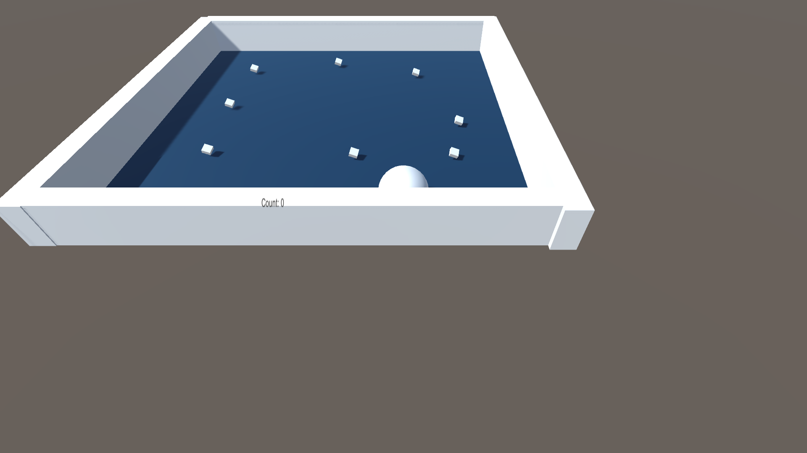

2017-7-31 Unity学习第一周
现在学起来，还没有超出我学习的范围。就是熟悉程序界面，怎么导入素材，以及如何一些对象的属性的更改之类的。毫无难度，没有任何挑战。
自从开始学习GOLang，各种问题不断。后悔学习这个东西了。不如之前学习python来的带劲。也可能是因为这段同时学习的东西太多了。各种各样的知识一直在冲突，最后一个月好好收心，将重点放在Unity上。
说好两个月做游戏的，结果现在唯一的收获就是从Linux跑到Windows。虽然windows总体反应没有linux迅速，但好处是省电以及美观，不折腾。（虽然这几天win折腾的不比linux少，而且没有linux方便、直接。）
不过也算了。现在win有了linux子系统，在这个东西的帮助下，windows也不是那么别扭了，既然win可以如此方便的使用linux，那么也没必要在linux放个虚拟机，消耗过多的性能。
linux最强的东西，不就是它的终端吗？有了终端，还要什么GUI?
从今天开始，熟悉使用Unity。开发（照抄）一款2D平台游戏。
2017-8-01
如何控制一个对象
给对象建立一个脚本。
在脚本里新建一个FixedUpdate()函数，有以下东西
var moveHorizontal = Input.GetAxis("Horizontal");var moveVertical = Input.GetAxis("Vertical");在这里,这两个是获取键盘控制，以及触控屏控制。
但是，接下来的一个点有一些不明白。
xxxxxxxxxxVector3 movement = new Vector3(moveHorizontal,0.0f,moveVertical);如果前两句是获得键盘输入，那么，这个按理说就是控制移动。可是，接下来还有那么一句话。
xxxxxxxxxxGetComponent<Rigidbody>().AddForce(movement*speed*Time.deltaTime);这句代码就是获取刚体这个元素，也就是我们控制的小球。同时，，给它一个力，这个力的大小，就是我们控制的方向及速度及每秒移动的距离。
简单的整理一下上面的几句话。就是，先获取键盘输入，接着，给键盘输入下一个定义：让它控制物体的x,y,z，因为我们只输入x,z所以，y的值设为0.0f(float)。到这里，我们并未实现物体移动。前面的目的只是为了定义如何改变。真正实现移动的，是最后一句话。缩地刚体，同时，实现每秒移动的距离。前面的几句，都没有真正锁定刚体，而只是在下定义罢了。
完整代码为：
xusing System.Collections;using System.Collections.Generic;using UnityEngine;pubilc class PlayerControler : MonoBehaviour { public float speed; void Start(){} void FixedUpdate(){ float moveHorizontal = Input.GetAxis("Horizontal"); float moveVertical = Input.GetAxis("Vertical"); Vector3 movement = new Vector3(moveHorizontal,0.0f,moveVertical); GetComponent<Rigidbody>().AddForce(movement*speed*Time.deltaTime); }}如何控制摄像机
在里，我们希望摄像机锁定小球，跟随小球运动。如果简单的将摄像机和小球绑定，让摄像机成为小球的子对象。那么摄像机就会跟着小球转动。
在start()函数里，首先记录下摄像机的位置。这里只执行一次，目的就是获知当前摄像机在哪里。
之后新建函数LateUpdate()，在这里，我们要做一件事，就是让摄像机的位置在最开始的位置的基础上跟着某件东西移动。。
因为在这里，我们仅对摄像机做脚本，在这个脚本里，我们并不知道外界有什么东西，更不知道我们要随着什么一起运动。所以我们要在代码的最开始，空出一个变量，之后我们再在引擎里将小球填进这个变量里。
那么代码可以这样写。
xxxxxxxxxxpublic GameObject player;private Vector3 offset;第一句空出一个变量。第二句空出一个方位变量。
xxxxxxxxxxvoid Start(){ offset = transform.position;}在Start函数里，我们将方位变量填上摄像机的位置。
xxxxxxxxxxvoid LateUpdate(){ transform.position = player.transform.position + offset;}在这里，摄像机的位置跟随某个物体的位置移动。
到这里为止，我们的摄像机就会跟着某个东西一起移动了。
回到引擎上，我们会发现，摄像机的属性里，空出了一个叫player的小框。这就是我们之前申明的GameObject,变量，拖动小球到这个变量里，我们就实现了摄像机跟着小球运动的目的了。
碰撞物体，让其消失
我们在游戏里，经常会有捡到物品或者金币那么一种行为。但是，我们现在做到这里，游戏对象与游戏对象接触后，只是简单的碰撞，对方并没有消失。那么，如何实现捡金币的效果呢？
在这里，我们依旧是用小球来做说明。
我们可以先给可以捡拾的物品做一个标记，比如"PickUp"，把它添加到这个物体的TAG中。
这里，我们需要在小球上设立脚本。事实上，我们也可以为物体设立脚本，但我们要捡拾的东西往往多余我们的角色，在角色上设立一个脚本，比在众多物品上设立脚本方便得多。
在小球的脚本里，添加一个函数。这个函数属于Unity的api。
xxxxxxxxxxvoid OnTriggerEnter(Collider other){ if (other.gameObject.tag == "PickUp"){ other.gameObject.SetActive(false); }}这里也出现了一个gameObject ，和上文里，我们用的GameObject很像，但是，一个是某个物体的属性，一个是对象。
我们希望当某个东西的tag等于PickUp时，这个物体的显示就设置为false。
这里并没有结束，回到引擎里，我们还要在物品设置碰撞触发器。否则我们引擎只是理解我们相碰，没有设置触发机制。
显示分数
在引擎的游戏画面里，新增一个UI，属性是Text。
因为这个变化和小球的碰撞有关，所以我们在小球的脚本里添加一些东西。
在最开头，我们要将这个脚本和UI的显示相关联。于是，
xxxxxxxxxxusing UnityEngine.UI;这样，这个脚本里，我们就可以对UI产生影响。但这里，我们只是希望产生影响，还没有真正关联上具体的UI对象。为此，我们槽开一个空白，以此容纳一个UI text对象。
xxxxxxxxxxpublic Text countText; xxxxxxxxxxprivate int count;我们增加一个Int属性的变量，用来容纳分数。这里之所以用private,是希望我们不能在引擎里改变这个count的数值大小
这个Text对象要显示什么呢？为此，我们再建立一个函数。
xxxxxxxxxxvoid setCountText(){ countText.text = "Count: "+count;}我们将countText这个对象的text内容，改变为"Count: "+count。
最最开始，我们在start()函数里，将count归0，并且调用setCountText()函数，显示文字。
在碰撞物体的基础上，希望每次碰撞后，都会增加一个数字。
那么在OnTriggerEnter函数里，在other.gameObject.SetActive(false);下添加一句代码。
count++;
到这里，我们就实现了显示分数的能力了。

2017-8-02
如何创建人物动画
在导入游戏人物素材之后，可以将人物行为的几个动画同时选中，拖动到对象栏当中，就可以创建三个东西：
- 人物对象
- 人物的动画IDLE（.anime）
- 人物动画控制器
解释一下这三个东西。1、人物对象，就是一个对象。2、人物IDLE，人物普通状态下的行为。3、动画控制器，控制人物动作。
在动画这个对象的属性里，有一个Animetor，双击旗下的Controller，可以打开人物状态机，在这里可以设置动画的状态。
如何设定人物动作
在上一节的基础上，将人物动画直接拖动到人物对象上，就可以创建人物状态，或者说，人物的动作IDLE。此时我们只是简单的将动画归类，并没有设定人物与动作的互动。
人物对象复写
如果只是建立一两个人物动画还好说，但是如果我们要创建几个人物，虽然有着不同的外表，但是他们的动作都是相同的。比如，穿着军服和日常衣服的人物都有走，吃，攻击，防御几个相同的状态。在这种情况下，我们可以继承人物对象的状态，但是替换掉动画。
新建一个Animetor Override Controller文件，之后将我们先前制作的人物控制器拖动到它的属性上，就完成了人物状态的继承。之后再重新将动画文件覆盖在动作上即可。
以上就是简单的人物动画创建。
2017-8-03
创建随机地图框架
随机地图的创建在于如何创建随机的地面图块。
为此，创建一个新的GameObject[]数组，用以存放多个地图块。之后只要规划一下放置的位置就对了。简单的演示一下，在2d的地图上，如何绘制一个外围墙及地面。

首先是外围墙。
xxxxxxxxxxpublic GameObject[] outWallArray;public int rows=10;public int cols=10;private Transform mapHolder;mapHolder = new GameObject("Map").transform;private void mapFrame(){ for (int x=0;x<rows;x++){ for (int y=0;y<cols;y++){ if (x==0||x==rows-1||y==0||y==cols-1){ int index = Random.Range(0,outWallArray.Length); GameObject map = Instantiate(outWallArray[index],new Vector2(x,y),Quaternion.identity); map.transform.SetParent(mapHolder); } } }}第一句，建立一个存放外边围墙的数组。
第二、三句，规定一下地图的大小，长10，宽10。
第四、五句暂时放下，等下再一起讲。
第六句，建立一个名字叫mapFrame()的函数，这个函数的目的就是建立一个大体的地图框架。
第七、八句，两个for循环，在这个10X10的地图上绘制地图。
在看看if句。if的条件，表面我们要在第一列、第一行、最后一列、最后一行的地方画图。画什么呢？
if下第一句，申明一个index的数字，这个数字从0到存放外围墙的数组的最大值中，取一个整数。
之后if下第二局，我们让从外围墙数组中取出一个图块，让它显示在（x,y）这个地方，Quaternion.identity意思是不旋转。
最后一句，和第四、五句，一起，建立一个叫Map的父对象，将所有创造出来的地图块都加入到这个父对象中。
到这里为止，只是简单的创造了外围墙，还没有地面。
为了绘制地面，要对上面的代码做一点改造。为了好看，将部分代码省略。
xxxxxxxxxxpublic GameObject[] outWallArray;public GameObject[] floorArray; //新增的部分.....if(x==0||x==rows-1||y==0||y==cols-1){ ......}else { int index = Random.Range(0,floorArray.Length); GameObject map = Instantiate(floorArray[index],new Vector(x,y),Quaternion.identity); map.transfrom.SetParent(mapHolder);}新增的数组，用来装地面的图片。之后新增的else部分，和绘制围墙同理。
这里结束以后，就能绘制一个大体的地图框架了。
随机创建地图上的障碍
这里最重要的是障碍的随机性。在绘制地图框架的时候，只需要简单的设定界限，比如在第几行、第几行绘制外围墙，其他的绘制地面，就好了。但在这一步，需要做到随机性就不能用上面的方法了。
因此，需要先制作一个列表，不要数组的原因是，列表比数组更方便加入元素和删除元素。在这个列表里，我们装入的是我们需要随机放入障碍领域的地图位置。每次随机抽出一个地图位置，在这个地图位置放入一个随机障碍，接着从列表里删去这个地图位置，避免出现两个障碍出现再同一个位置。
看一下实例代码，创建一个存放地图位置的列表。
xxxxxxxxxxprivate List<Vector2> positionList = new List<Vector2>();private void makeHinder() { positionList.Clear(); for (int x=2;x<rows-2;x++){ for(int y=2;y<cols-2;y++){ positionList.Add(new Vector2(x,y)); } }}第一句，建立一个二维向量的列表，名字叫做positionList。
第二句，建立一个名字叫makeHinder()的函数，表面在这个函数里，我们准备布置障碍。
第三句，我们清空positionList这个列表。
第四、五句，两个for循环，获取2，到最大长度减2的地图位置。之所以是这个范围，是因为我们要至少留一条小路，保证玩家无论如何都能到达终点。
第六句，将该范围的所有地图位置加入到positionList这个列表。
这一步，我们只是创造了地图数据列表，并没有加入障碍。为此我们再新建一个函数，用来布置障碍。
xxxxxxxxxxpublic int mixHinder;public int maxHinder;public GameObject[] hinderArray;private void decorateHinder(int mix,int max,GameObject[] array){ int count = Random.Range(mix,max+1); for (int i=0;i<count;i++){ int positionIndex = Random.Range(0,positionList.Count); int arrayIndex = Random.Range(0,array.Length); GameObjec map = Instantiate(array[arrayIndex],positionList[positionIndex],Quaternion.identity); map.transform.SetParent(mapHolder); positionList.RemoveAt(positionIndex); }}前三句，建立了我们需要布置的障碍的最大值，最小值以及存放障碍对象的数组。
函数体里的第一句，我们随机从最小值到最大值里抽一个数，这个数就是我们要布置障碍的数量。
for循环里第一句，随机从地图位置列表的总数里，抽一个地图位置号数，存放到positionIndex。
再往下一句，我们随机从障碍对象数的最大值抽出一个数,存放到arrayIndex。
再下一句，再array[arraryIndex]这个对象，放到positionList(positionIndex)这个位置，不旋转。
倒数第二句，将这个对象，加入到mapHolder这个父对象中。
最后一句，我们从位置列表里删去这个已经布置了障碍的位置。
现在我们只要在makeHinder这个函数的末尾，调用这个decorateHinder函数，就可以实现随机布置障碍的目的了。
食物的布置同理。
最后，在引擎上，将食物、障碍分到同一层就可以了。
最后结果是这个样子。

2017-8-05
角色的控制
之前有一部分是关于Vector3的移动案例，但是Vector2的案例还没有。虽然两者没多大区别，但还是好好整理一下为好。
先在引擎里，给对象加入刚体。因为现在制作的是2d游戏，所以选用2d的刚体(ridigbody2d)
对我们需要控制的对象上，建立一个新的脚本。
脚本里，用FixedUpdate()函数替代Update()，也可不替代，只是个人觉得这样动画会好看一些。
先说明一下，我们的目的。这次游戏里，需要做到这么一个效果。每走一步，角色就停止一下。
简单的说说逻辑。最开始，我们要接收从键盘上输入的案件，得到一个位置，这个位置等于目前我们的位置，加上我们键盘输入后得到的位置。之后我们让角色移动。但是刚体存在惯性，因此，需要隔断时间暂停一次，用return返回。
好了，先实现第一步。
xxxxxxxxxxfloat h = Input.GetAxisRaw("Horizontal");float v = Input.GetAxisRaw("Vertical");targetPos += new Vector2(h,v);接着，来看看第二部，让角色开始移动。
xxxxxxxxxxGetComponent<Rigidbody2D>().MovePosition(Vertor2.Lerp(transform.position,targetPos,smoothing*Time.deltaTime));第三步，实现步伐间隔。
xxxxxxxxxxpublic float restTime = 0.5f;public float restTimer = 0;...restTimer += Time.deltaTime;if(restTimer<restTime){ return;}else { ...}到现在，我们已经懂得如何实现这个步骤了，关键是如何组合这些步骤。
首先要明白，在FixedUpdate()函数体里，每隔段时间都会暂停一会儿。
如果是以上面的顺序来看，会发现，最后一步压根没作用。因为到达return之前，已经不停的运动，哪怕到达了return，我们也会重新刷新，一直在不停的运动。为此，我们让让第三步往前靠。
再看看第二步。第二步控制的是运动，如果太往后靠，它会随着步伐间隔而停止，然后又往前，又停，又往前。看上去就像掉帧一样。
于是，我们要让输入靠后。
最后，看上去，代码就是这样子的。
xxxxxxxxxxprivate void FixedUpdate(){ GetComponent<Ridigbody2D>().MovePosition(Vector2.Lerp(transform.position,targetPos,smoothing*deltaTime)); restTime += Time.deltaTime; if(restTimer<restTime){ return; }else { float h = Input.GetAxisRaw("Horizontal"); float v = Input.GetAxisRaw("Vertical"); targetPos += new Vector2(h,v); restTimer = 0; }}2017-8-06
物体碰撞
再此前，我们用引擎造出的刚体实现了碰撞。但是，当时并不了解过多细节。这次，将细细看一下，如何实现物理碰撞。
给角色和墙体之类的物体加入碰撞机（BOX Collider 2d），之后，对象就会被四条线围住。这四条线围成的方框，类比成一个盒子一样的东西，一旦盒子与盒子接触，则视为发生碰撞。避免两个盒子只是靠在一起就发生碰撞，调小盒子的大小。
除此以外，还需要对我们需要发出碰撞的物体加入一点标签。
之后，先对角色的脚本进行更改。
在行动前，加入一些脚本。
xxxxxxxxxxGetComponent<BoxCollider2D>().enable = false;RaycastHit2D hit = Physics2D.Linecast(targetPos,targetPos+new Vector2(h,v));GetComponent<BoxCollider2D>().enable = true;hit发出的射线，检测的是前方是否有盒子的边。可发出射线的物体本身，也是一个盒子。所以要先将自己的盒子关闭，再发出射线，这样就能检测到前方的物体了。
xxxxxxxxxxif(hit.transform==num){ ...}else if (hit.collider.tag == "Wall"){ ...}else if (hit.collider.tag == "OutWall"){ ...}如果不能前进，...换成return;就可以了。
触发动作
我们希望，当碰撞到标签为"Wall"的时候，发起某个动作、行为。
在这里，使用这两个api。
xxxxxxxxxxGetComponent<Animator>().SetTrigger("doSomething");这里的doSomething，是之前在状态机里设置的Trigger。
举个例子。
xxxxxxxxxxif(hit.collider.tag == "Wall"){ GetComponent<Animator>().SetTringger("Attack");}当检测到前方有墙的时候，就会触发攻击的动作。
另外，我们还可以调用方法。
xxxxxxxxxxhit.collider.SendMessage("Method");这个是配合上文的碰撞检测一起使用。这个api是发送信号，告诉引擎执行Method这个函数。
2017-8-08
敌人如何追踪角色
大体思路就是，判断自己和角色的具体位置差。如果y轴相差得大，就往y轴走，反之，往x轴走。
放一下简单的实例代码。新建一个Enemy.cs
xxxxxxxxxxprivate Vector2 targetPos;private transform player;...void Start(){ targetPos = transform.position;}void PreMove(){ Vector2 offset = player.position - transform.position; if(Mathf.Abs(offset.y)>Mathf.Abs(offset.x)){ if(offset.y>0){ ... }else if(offset.y<0){ ... } }else{ ... }}2017-8-16
保留BGM（如何在切换场景时，不摧毁对象）
这几天有点偷懒，跑去玩《ever17》，再回来制作游戏时，发现好多东西都想通了。果然还是得多推（纸片）妹子才行啊！
好了。先说说场景切换。
直接使用
xxxxxxxxxxSceneManager.LoadScene("name");就可以切换场景。但是切换场景的时候，会把原场景的所有对象全部摧毁，包括一切数据。为了保留血量等数据，还要有东西来保存这些。
xxxxxxxxxxPlayerPres.SetInt("key",value);key是指需要保存到内存里的数据，value储存值。如果这个值是float型，就SetFloat,string的同理。在下一个场景的时候，读取回来就可以了。
xxxxxxxxxxPlayerPres.GetInt("key");理解完了这个。再看看，关于BGM的事情。
首先BGM不是值，是对象。在切换场景的时候会被摧毁，而且还不能通过上一种方式储存。于是，我尝试用一个API来搞定。
xxxxxxxxxxDontDestoryOnLoad(gameObject);这个API可以防止对象不摧毁。可不知道为什么，当我切换场景的时候，这个BGM对象没摧毁，但同时，又产生了一个新的BGM对象。有点糟糕。仔细想想，每次地图对象产生的时候，一定会产生BGM对象，而前一个没摧毁，就会同时出现两个BGM对象。
所以，只要做个判定，看是否存在对象就好了。
xxxxxxxxxxprivate static BGM _instance;public static BGM Instance { get { if (_instance == null){ _instance = FindObjectOfType(BGM); DontDestroyOnLoad(_instance.gameObject); } return _instance; }}void Awake(){ if (_instance == null){ _instance = this; DontDestroyOnLoad(this); }else if(this != _instance){ Destroy(gameObject); }}虽然不是很懂，大概的意思怕是，如果存在BGM对象，则不在建立，否则建立的意思。
到这里，已经可以保持BGM持续播放了。剩下的，明天增加一点特效和天数的显示，这个项目就正式结束了。
2017-8-18
制作一个摇杆
摇杆这个问题挺困扰我的，原先的想法是，做四个按键，每个案件返回一个值-1或1。结果按键监听不支持返回值。于是只好作罢。
先是在国内网站找了一圈，发现他们的想法太繁杂，一个小功能如果要那么多代码来实现，宁可不要。跑到youtube上，看了几个教程，发现台湾的一个小哥讲的还不错，下面就简单的描述一下实现的想法。
首先，在画面上，要有一个托盘和一个摇杆。在托盘上建立脚本，这里不在摇杆上建立，大概就是不好触控吧。脚本里，先建立四个变量。两个RectTransform变量，用来记录摇杆和托盘的位置，一个bool值，用来检测手指是否在摇杆上。一个是角色的位置。
之后先建立三个函数，StartDrag(),Drag(),StopDrage()，这三个函数分别实现手指放上去，拖动摇杆，手指离开。之后用Update()函数不停的实现Drag()函数。
一个函数一个函数的看。
在StartDrag()，我们让先前的那个bool值为真，表示手指已经在托盘上了，可以开始拖动了。这个函数结束。
在StopDrag()，我们让bool值为假，表示手指离开了。同时，让摇杆的位置归零回到初始位置。
在Drag()，先判断bool值，为假则直接返回。否则，先检测鼠标的位置，用input.mousePosition,实现单点触控，赋给一个Vector2变量，之后用这个变量减去摇杆原始位置，得到真正的位移。为了限制摇杆的移动，用Vector2.ClampMagnitude(newPos,70)，让它的位置始终在托盘上。最后显示摇杆的位置，handle.anchoredPosition = pos。在最后，为了控制人物移动，新建一个Vector2变量，接收鼠标向量乘以速度和帧变化，将结果给角色的位置就好了。
代码部分结束了。可到这里，我们并没有实现，调用StartDrag()和StopDrag()两个函数。我们希望手指点击执行StartDrag()，手指移开实现StopDrag()。还有，我们没有指定谁是托盘,谁是摇杆。这些还要回到引擎上操作。
在摇杆上建立Even Trigger，在Even Trigger上建立两个事件，一个是PointDown，一个PointUp，分别对应StartDrag()和StopDrag()。同时，在托盘的属性里，指定托盘，摇杆，人物。
到这里就实现了一个小的摇杆。
献上完整代码
x
using System.Collections;using System.Collections.Generic;using UnityEngine;public class Analogy : MonoBehaviour { public RectTransform handle; public RectTransform rect; public Transform player; private bool dragging = false; private void Update() { Drage(); } public void StartDrag() { dragging = true; } public void Drage() { if (!dragging) { return; } Vector2 mPos = Input.mousePosition; Vector2 newPos = mPos - rect.anchoredPosition; Vector2 pos = Vector2.ClampMagnitude(newPos,70); handle.anchoredPosition = pos; Vector2 dir = pos.normalized* 60 * Time.deltaTime; Player.Transfor(dir); } public void StopDrage() { dragging = false; handle.anchoredPosition = Vector2.zero; }}第二个项目，Rogulike类型游戏到这里结束了。总的来说，还是有学到不少东西。地图的随机生成，元素数组，位置列表。还有类与类之间的调用，动画状态机的使用，人物行走，获取组件什么的。
感觉还是学的好少。。。。。。